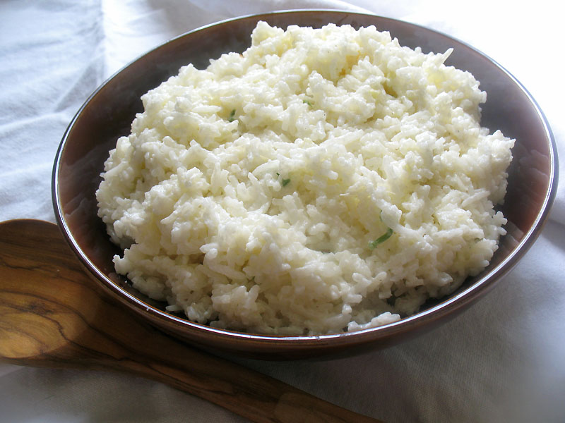

Rice dish

Description
Rice is an old dish made all over the world in different forms. There are
different types of rice, for example basmati, long grain etc. It usually
is cooked and prepared with some butter/olive oil and salt.
Ingredients
- Rice type of your choice: for example Basmati
- Water
- Salt
- Butter
Steps
- Strain the rice under some streaming water
- Boil some water in the meantime
- Add the rice to the pan
- Pour the boiling water over the rice and let it sit on a low fire
- Add salt on top
- Wait until most of the water is evaporated and add some butter
- Let it wait for another 10 minutes
- Enjoy!